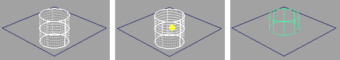

修剪会移除（实际上是隐藏）曲面上任何被曲面上的曲线界定或一分为二的区域。通过修剪曲面可以在 NURBS 曲面上创建复杂的边和洞。在修剪曲面前必须创建曲面上的曲线。
修剪曲面
- 选择“曲面 > 修剪工具”(Surfaces > Trim Tool)。
- 单击要修剪的曲面。
曲面上将出现一个“修剪栅格”。
- 单击曲面上希望保留的区域（由曲面上的曲线界定），无需按住 Shift 键即可单击多个面域。
单击后，被修剪掉的区域将呈点状，保留的区域将保留为实体。
如果要更改工具以便单击曲面上要修剪掉的部分，打开选项框（“曲面 > 修剪工具”(Surfaces > Trim Tool) >
 ）并将“选定状态”(Selected State)设置为“丢弃”(Discard)。
）并将“选定状态”(Selected State)设置为“丢弃”(Discard)。
- 按 Enter 键进行修剪。
提示：
接缝可将区域一分为二。当单击被接缝平分的区域时，确保两侧均已标记。
取消修剪曲面
- 选择要取消修剪的一个或多个曲面。
- 选择“曲面 > 取消修剪”(Surfaces > Untrim)。
默认设置为从曲面移除全部修剪操作，使其恢复到原始状态。若要仅反转最近执行的修剪操作，请打开选项框（“曲面 > 取消修剪”(Surfaces > Untrim) >
）并将“取消修剪”(Untrim)设置为“最后一个”(Last)。
如果修剪曲面时启用了“收缩曲面”(Shrink Surface)选项，则“取消修剪”(Untrim)无法使曲面恢复原始形状。
注释
- 如果后续修剪操作涉及 NURBS 基本圆锥体或带封口的圆柱体，则必须在启用了“为封口生成附加变换”(Extra transform on caps)选项的情况下创建这些对象，否则要修剪的曲面仅可在“大纲视图”(Outliner) /“Hypergraph”中进行选择，而不能在该视图中进行选择。